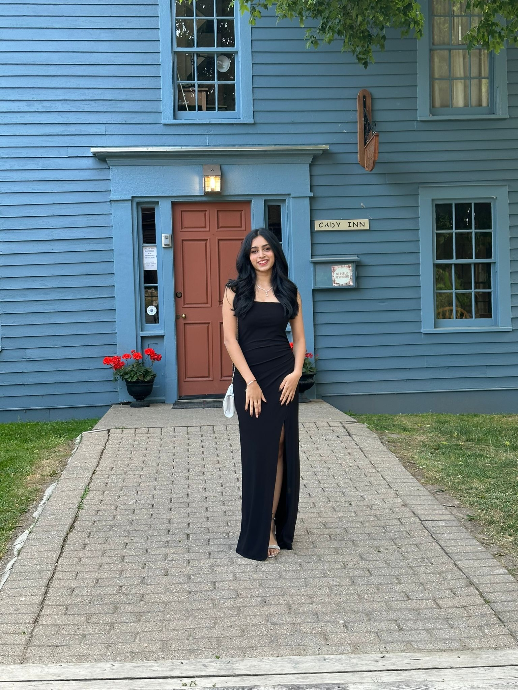

About Me
I am an undergraduate student pursuing a B.A in Information Science with a concentration in human-centered technologies and minors in Information and Communication Technology and Development (ICTD) and in Computational Mathematics, Science and Engineering (CMSE). I aspire to understand the complex systems at play in living organisms and to use that knowledge to analyze human health, and eventually propel me forward into the field of Bioinformatics.

I look forward to seeing what the future holds for me and how I can use my passions and desires to have a meanigful career going forward. I also take part in several extra curricular clubs at Michigan State University such as Spartan Analytics Consulting Group and MSU SciReview where I recently published a literature review on the role of big data in healthcare.